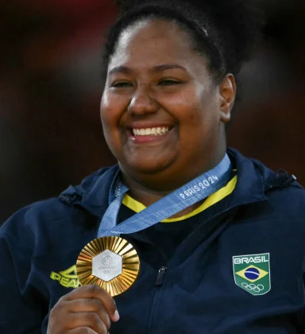
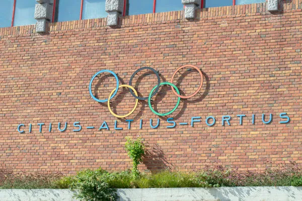

Filha do ex-judoca Poseidonio José de Souza Neto, Bia começou no judô muito nova e conquistou sua primeira medalha aos 7 anos, representando a Associação Budokan de Peruíbe. Anos depois, com 15 anos e vendo o avanço da sua carreira, se mudou para São Paulo, onde representou o Palmeiras e logo em seguida o Pinheiros.
Apesar da influência paterna em casa, Beatriz chegou a flertar com a natação, mas seu amor pelo tatame falou mais alto. Hoje com 26 anos, Bia teve seu primeiro grande resultado em campeonatos mundiais conquistado em 2017, com a prata em Budapeste no torneio de equipes mistas. No mesmo local, já em 2021, conquistou o bronze no torneio individual.
Mesmo sendo muito nova, a medalhista de ouro esteve nas Olimpíadas de Tóquio 2020 como suplente, já que na ocasião foi superada pela então representante da categoria: Maria Suelen Altheman. Depois do evento, Suelen - com uma grave lesão - abandonou a carreira e passou a treinar Bia e os demais atletas do Esporte Clube Pinheiros.

“O que me manteve firme foi o sonho da medalha”
A judoca ainda está se situando depois da vitória em Paris, enquanto se prepara para as próximas conquistas rumo a uma nova medalha em Los Angeles. “Por mais que possa parecer impossível, não é. Mas não vai ser fácil.”
| País |
Medalhas |
Total |
| Estados Unidos |
40🥇 44🥈 42🥉 |
126 |
| China |
40🥇27🥈 24 |
91 |
| Japão |
20🥇 12🥈 13🥉 |
45 |
| Tabela Olímpica |
Os cinco anéis representam cinco continentes (América, África, Ásia, Oceania e Europa) e estão interligados entre si como forma de demonstrar a ideia de união. Os anéis possuem cores diferentes, sendo elas o azul, preto, vermelho, amarelo e verde. A escolha dessas cores se explica porque todo país do planeta tem pelo menos uma dessas cores em sua bandeira.
